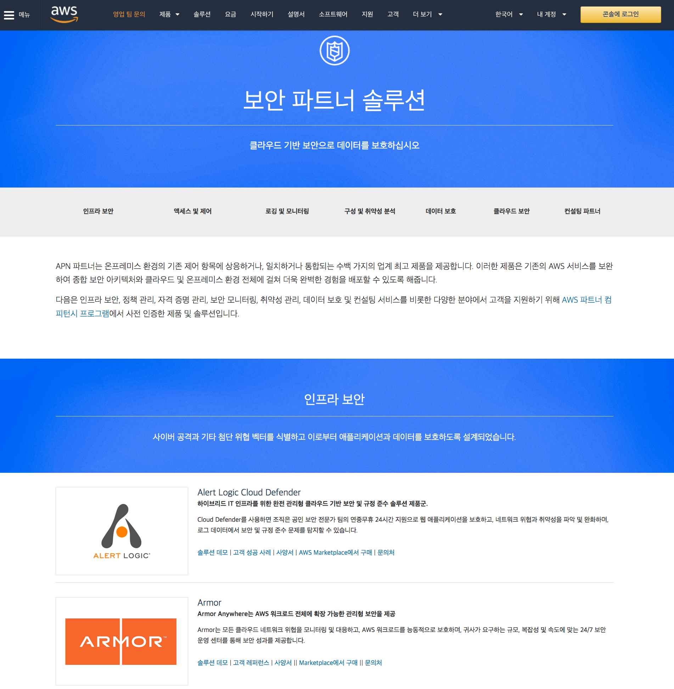

글로벌 파트너
보안 파트너 포털
보안 파트너 솔루션 – 보안 관련 글로벌 파트너 업체에 대한 정보를 담고 있는 싸이트 입니다. 제품 별로 고객사례, 데모, 지원 사양, 구매 링크, 문의처 정보가 있습니다. 
보안 파트너 Quick Starts
Quick Starts는 고객이 보안 및 고가용성을 위한 AWS 모범 사례에 따라 AWS 상에 인기 있는 솔루션을 배포하는 데 도움이 되도록 AWS 솔루션스 아키텍트와 파트너가 구축합니다. 이러한 레퍼런스 배포는 대개 클릭 한 번으로 1시간 이내에 핵심 기술을 AWS 클라우드에 자동으로 구현합니다. 몇 가지 단계를 거쳐 테스트 또는 프로덕션 환경을 구축하고 즉시 사용을 시작할 수 있습니다.
본 목록의 기능설명을 보시고 필요한 환경을 활용해 보실 것을 권장드립니다.
적용 전 반드시 Cost and License 항목을 주의깊게 확인하시기 바랍니다.
- Check Point : Check Point CloudGuard Auto Scaling on AWS - G/W 형태의 UTM 제품인 CloudGuard를 Auto-scaling 그룹 설정과 함께 구성하는 CloudFormation 템플릿(적용 시간 30분)
- Trend Micro : Deep Security on AWS - Host기반의 IDS/IPS 제품인 DeepSecurity의 Manager/DB 환경을 가용성을 고려하여 구성할 수 있는 CloudFormation 템플릿
- Trend Micro : Cloud One Conformity AWS Control Tower integration
- Trend Micro : Trend Micro Cloud One—Workload Security on AWS
- Sophos : Sophos outbound web proxy on AWS - 아웃바운드 전용의 웹 프락시 환경을 Auto-Scaling 그룹 설정과 함께 구성하는 CloudFormation 템플릿
- Symantec : Symantec Protection Engine on AWS - 멀웨어 방지 및 컨텐츠 스캐닝 기능을 제공하는 SPE 환경을 구성하는 CloudFormation 템플릿
- PaloAlto & Splunk : Security and analytics environment on AWS - G/W 형태의 차세대 방화벽인 PaloAlto VM과 Splunk Enterprise를 함께 구성하여 Enterprise급의 방화벽 로그 분석 환경을 구성하는 CloudFormation 템플릿
- Aviatrix : Aviatrix FQDN Egress Filtering on AWS - VPC egress 트래픽에 대한 FQDN 필터링 G/W를 구성할 수 있는 템플릿(적용 시간 10분)
- Aviatrix : Aviatrix Site to Cloud VPN on AWS
- Aviatrix : AWS 기반 Aviatrix User VPN
- Citrix : Citrix Virtual Apps and Desktops Service on AWS
- Citrix : Citrix Web App Firewall (WAF) on AWS
- CloudLens & Eastwind : Security with CloudLens and Eastwind on AWS - CloudLens(DLP)
- Duo Security : Duo MFA(on Radius Proxy) with AWS Directory Service
- Pindrop : Amazon Connect와 통합된 Pindrop - 콜센터 사기 방지 솔루션인 Pindrop과 Amazon Connect 환경을 구성
- McAfee : AWS의 McAfee ePolicy Orchestrator - EC2 보안을 위해 McAfee의 엔드포인트 보안 솔루션인 ePO환경을 구성
- HashiCorp : AWS 기반 HashiCorp Vault - 암호화된 키/밸류 저장소인 HashiCorp Vault 환경을 구성
- HashiCorp : Amazon EKS 기반 HashiCorp Vault - EKS에서 비밀을 관리하고 암호화하기 위한 통합 인터페이스
- Informatica : Informatica Secure@Source on AWS - 민감 정보에 대한 가시성을 제공하는 Secure@Source 환경을 구성
- Fortinet : Fortinet FortiGate EC2 Auto Scaling on AWS
- Fortinet : Fortinet FortiGate Auto Scaling Baseline on AWS - 오토스케일링 되는 FortiGate NGFW 환경을 구성
- F5 : BIG-IP Virtual Edition(VE) on AWS - F5 BIG-IP VE환경 구성
- Microsoft : AWS 기반 Web Application Proxy - 외부 접근 사용자들을 위한 ADFS와 Window Web App Proxy환경을 구성
- Microsoft : AWS의 원격 데스크톱 게이트웨이
- Microsoft : AWS의 Active Directory 도메인 서비스 - MS AD Domain Service 환경을 구성
- Microsoft : Microsoft Public Key Infrastructure on AWS
- Microsoft : CMMC-Ready Microsoft Active Directory
- Libreswan : Opportunistic IPsec mesh for Amazon EC2 instances on AWS - Libreswan을 이용하여 IPSEC 기반의 암호화 통신기능이 탑재된 EC2환경을 구성
- DataSunrise : DataSunrise with Amazon Redshift on AWS
- Pindrop : Pindrop - ensure security, identity, and trust in voice interactions
- Nubeva : Nubeva TLS Decrypt on the AWS Cloud - TLS Termination 후 패킷 분석, IDS/IPS 관련 오픈소스 환경을 구성
- SumoLogic : Sumo Logic Security Integrations on AWS
- SumoLogic : Sumo Logic Security Integrations for AWS Organizations
- CISCO : Cisco ASAv RA-VPN on AWS
- CISCO : Cisco Duo MFA on AWS
- FOGHORN : Fog360 Security
- FOGHORN : VPC-In-A-Box
- Cohesive : Cohesive Networks VNS3 on AWS - Overlay Network
- Informatica : Informatica Secure@Source on AWS
- IBM : IBM Cloud Pak for Security on AWS
- OKTA : Okta Advanced Server Access on AWS
- Suricata : Amazon EC2 with Suricata on AWS
- brillio : Amazon SageMaker with Guardrails on AWS
- Atlassian : Atlassian Crowd Data Center on AWS
- Barracuda : Barracuda CloudGen WAF on AWS
- Darktrace : Darktrace vSensor - VPC 트래픽 위협탐지
- Evidian : Evidian SafeKit on AWS - 고가용성 지원
- Snyk : Snyk Controller for Amazon EKS - EKS환경의 보안취약점 탐지
- Snyk : Snyk Security - 오픈 소스 취약점을 찾아 자동으로 수정
- Nubeva : AWS 클라우드 기반 Nubeva TLS Decrypt
- New Relic : AWS 기반 New Relic AWS Control Tower 통합 - AWS Control Tower에서 관리하는 다중 계정 환경 배포
- superwerker : AWS 기반 Superwerker - 보안 BP에 맞춘 멀티 어카운트 환경 셋업
AWS Gateway Load Balancer(GWLB) 연동 파트너(외부 링크)
- Check Point - Check Point CloudGuard integrates with AWS Gateway Load Balancer at Launch
- Check Point - CloudGuard Network Security for AWS Gateway Load Balancer Architecture Options
- Check Point - CloudGuard Network Security streamlines operational efficiency with as-a-Service solution on AWS
- Cisco - Cisco Cloud ACI & AWS continued journey in the cloud
- Cisco - Snort 3 Anywhere
- Cisco - Secure Firewall-as-a-service (FWaaS) on AWS
- Cisco - Simplify Network Security with Cisco Secure Firewall-as-a-service (FWaaS) on AWS
- Cisco - Building a Scalable Security Architecture on AWS with Cisco Secure Firewall and AWS Gateway Load Balancer
- Fortinet - Highly Scalable FortiGate Next Generation Firewall Security on AWS Gateway Load Balancer Service
- Fortinet - FortiGate NGFW - Creating the GWLB and registering targets
- Fortinet - FortiGate NGFW - Post-deployment configuration
- PaloAlto - PaloAlto VM-Series Virtual Firewalls Integrate With AWS Gateway Load Balancer
- PaloAlto - Palo Alto VM-Series and AWS GWLB Integration Overview
- Radware - Deploy and Scale DDoS Protection in the Public Cloud
- Trend Micro - Cloud One – Integrates with AWS Gateway Load Balancer for Improved Security Function
- Trend Micro - Cloud One Network Security-as-a-Service
- Valtix - Valtix brings Advanced Network Security into Cloud Era with AWS Gateway Load Balancer
- Valtix - Valtix Network Security Service with AWS Gateway Load Balancer
- F5 - BIG-IP Virtual Edition - BEST (PAYG, 1Gbps)
- How cPacket cCloud Solution Leverages GWLB?
- Bringing Glasnostic’s Traffic Control to AWS Gateway Load Balancer
- AWS Gateway Load Balancer Enhances NETSCOUT Visibility in AWS
- Introduction to Traffic Mirroring to GWLB Endpoints as Target
AWS 글로벌 보안 파트너와 관련된 기타 유용한 링크들
- AWS Marketplace 보안
- GIT - Packet Capture on AWS - WatchGuard Firebox 솔루션을 이용하여 AWS 환경에서 패킷 캡쳐를 할 수 있는 환경 구성
- GIT - Infra secret management overview - 클라우드 상의 인프라(서버, DB, WAS 등)의 중요 비밀 정보(암호, 인증서 등)들을 안전하게 관리할 수 있는 기능을 제공하는 제품들에 대한 리뷰 싸이트
- TrendMicro - Integrate Deep Security with AWS Services - 외부 블로그, Deep Security와 GuardDuty, Macie, Inspector, WAF, Config 간 연동방식을 설명
- Trend Micro - Trend Micro CloudOne - Share threat intelligence with AWS
- GDPR 관련 포인트 솔루션 - OneTrust, NYMITY, GROUND LABS
- PII DLP 관련 솔루션 - BIG ID, wirewheel
- CloudConformity - security checking rules
- Splunk(GIT) - About the AWS Security Hub to Splunk integration
- Splunk(GIT) - Trumpet - Splunk
- Splunk - Automating AWS Data Ingestion into Splunk
- Splunk - View Amazon CloudWatch logs for Amazon RDS in Splunk Cloud Platform
- Widdix(S3 멀웨어 및 컨텐츠 스캐닝 관련 솔루션들) - Widdix - S3 VirusScan, Symantec - Content and Malware Analysis
- DataSunrise(DB 방화벽, 접근제어 등의 패키지 솔루션) - DataSunrise Database and Data Security
- OWASP 스캐너 - Introduction to OWASP ZAP for Web Application Security Assessments
- OWASP 스캐너 - Vulnerability Scanning Tools
- Centrify - Adding and configuring a Custom SAML application
- G-Suite - Set up your own custom SAML application
- PING - Add or update a SAML application
- PING - AWS Single Sign-On Connector
- PING - Building SAML federation for Amazon OpenSearch Dashboards with Ping Identity
- OKTA - Manage Amazon EKS with Okta SSO
- OKTA - Integrating OKTA identity service provider with NICE EnginFrame
- OKTA - Building SAML federation for Amazon OpenSearch Dashboards with Okta
- CheckPoint - AWS Security microsite
- Dataguise - Automatically Detect and Protect Sensitive Data in Amazon S3 Using Dataguise DgSecure
- CloudKnox - Continuous permissions rightsizing to ensure least privileges in AWS using CloudKnox and AWS Config
- Sumo Logic - Multi-Cloud and Hybrid Threat Protection with Sumo Logic Cloud SIEM Powered by AWS
- Palo Alto - Rapid, Automated Firewall Deployment Comes to AWS
- Palo Alto - Getting started with AWS Firewall Manager PaloAlto Cloud NGFW policies
- Azure AD - Automate SAML 2.0 federation for AWS multi-account environments that use Azure AD
- Sophos - Deploy Sophos web proxy UTM and Outbound Gateway on AWS
- F5 - Migrate an F5 BIG-IP workload to F5 BIG-IP VE on the AWS Cloud
- CrowdStrike(GIT) - CrowdStrike and AWS Systems Manager
- CrowdStrike - Defense-in-Depth Principles for Protecting Workloads with CrowdStrike and AWS
- FortiNet - FortiGurad Labs. - Managed IPS Rules for AWS Network Firewall
- Barracuda - Anatomy of a Supply Chain Ransomware Attack and How to Prevent it with Barracuda’s CloudGen WAF on AWS
- Aviatrix - Gaining Critical Security Insights and Control of Your Traffic with Aviatrix ThreatIQ and ThreatGuard
- Zscaler - Harden Your Cloud Security Posture in 3 Simple Steps with Zscaler
- PaloAlto(Blog) - Securing ingress using security solutions and AWS Transit Gateway - PaloAlto VM-series와 TGW 연계
- Immuta(Blog) - Implementing Centralized Fine-Grained Access Control with Immuta and AWS
- OpenVPN(Blog) - Setting up OpenVPN Access Server in Amazon VPC
- Snowflake(Blog) - Using AWS PrivateLink for Amazon S3 for Private Connectivity Between Snowflake and Amazon S3
- IronNet(Blog) - Protecting Your Deployments from Advanced Threats with AWS and IronNet
- Juniper(Blog) - How to Enhance Protection of AWS Workloads with the Juniper cSRX Container Firewall in Amazon EKS
- NoSpamProxy(Blog) - How Net at Work built an email threat report system on AWS
- Lacework(Blog) - Securing your AWS Control Tower multi-account environment with Lacework
- Blog - Maintaining Control of PII Hosted on AWS with Hold Your Own Key (HYOK) Security
- Blog - Vulnerability Management Considerations for Rapid Amazon EC2 Growth
- Blog - Security and Compliance at Scale with CloudHealth Secure State
- Blog - Isolating SaaS Tenants with Dynamically Generated IAM Policies
- Blog - Integrating Microsoft Active Directory with AWS Certificate Manager Private CA Using Secardeo certEP
- Blog - SaaS Identity and Routing with Istio Service Mesh and Amazon EKS
- Blog - AWS DevOps Competency Expands to Include DevSecOps Category
- Blog - Automate multi-account IP address management in AWS with BlueCat and AWS Control Tower
- Blog - Create a secure and fast DevSecOps pipeline with CircleCI
- Blog - A FinTech Roadmap to Data Security and Compliance with VGS and AWS
- Blog - Manage Multi-Tenant Remote Access with Cisco Secure Firewall Cloud Native on Amazon EKS
- Blog - Integrating Amazon S3 Virus Scanning into Your Application Workflow with Cloud Storage Security
- Blog - Modernize your Utility’s SOC and build better security with Splunk Cloud Platform on AWS
- Blog - Create AWS Accounts and Align to the CIS AWS Foundations Benchmark with Stax
- Blog - How to Mask Sensitive Data on AWS Using DataMasque
- Blog - CyberArk Identity as SSO for AWS Control Tower
- Blog - Managing Cybersecurity Risks with the Next Generation of Managed Security Services
- Blog - Build and Deploy a Secure Container Image with AWS and Snyk
- Blog - Implementing Zero-Trust Workload Security on Amazon EKS with Calico
Remarks
- 이 사이트의 모든 내용은 바뀌거나 수정될 수 있습니다.
- 공식적인 상세한 내용은 http://aws.amazon.com 의 내용을 참조하십시오.
- 제공되는 내용에 이견이 있거나 잘못된 링크를 발견하시면, 관리자(gisunlim@amazon.com)에게 메일을 주시면 대단히 감사하겠습니다.
개인 정보 보호 정책 | 사이트 이용 약관 | © 2020, Amazon Web Services, Inc. 또는 자회사. All rights reserved.